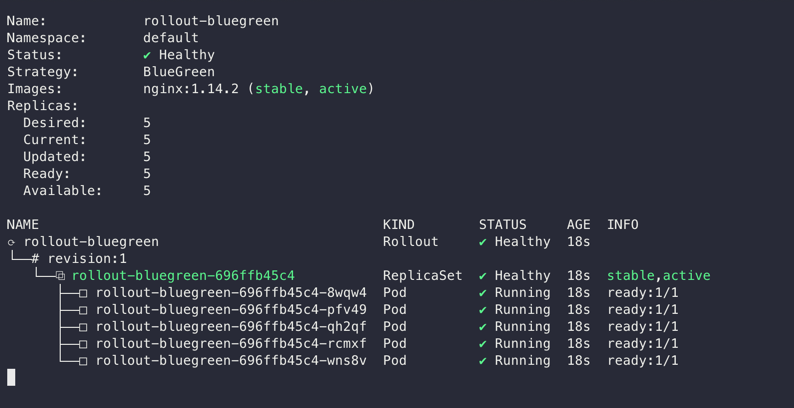
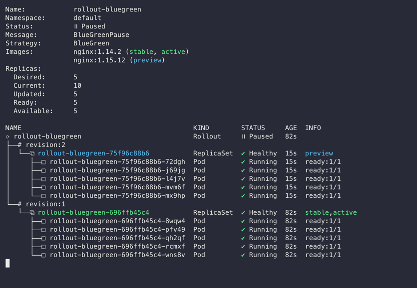
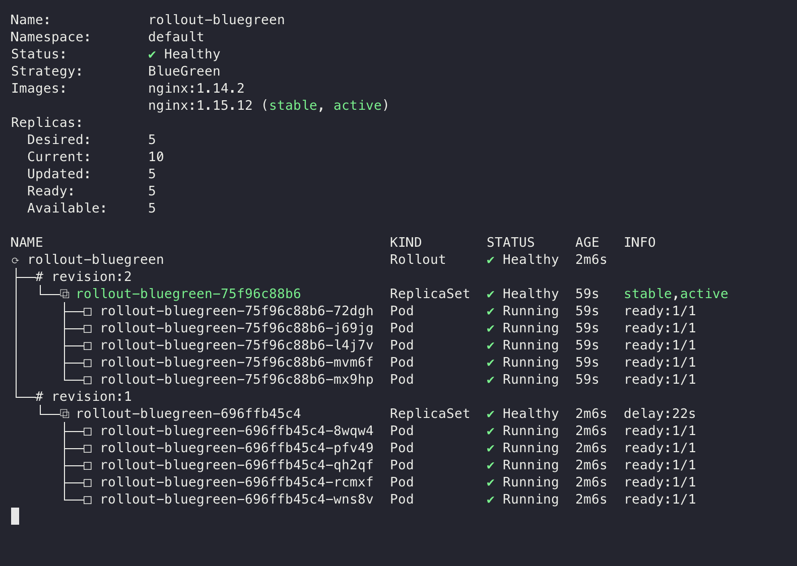
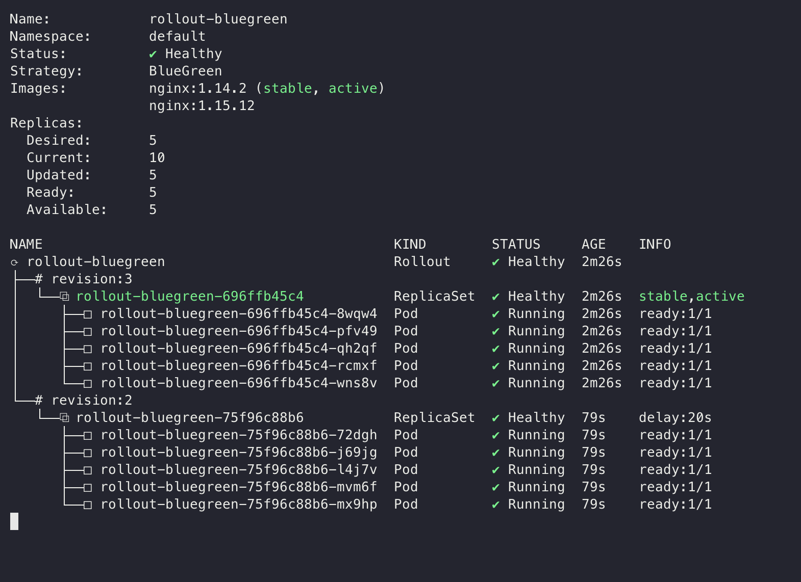
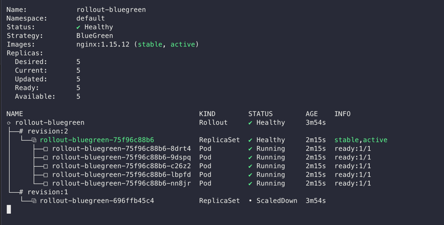

앞선 포스트에서 Argo Rollouts를 설치하고 간단한 예시를 통해 배포 전략이 적용되는 모습을 확인해보았습니다.
.spec.strategy 필드를 통하여 간단한 배포 전략을 설정하고 실제 배포를 진행했는데요.
Argo Rollouts는 필요에 따라 해당 필드를 다양하게 세팅하여 사용할 수 있습니다. 대표적인 방식으로 Blue/Green 배포 전략의 적용이 있습니다.
Blue/Green 배포 1
apiVersion: argoproj.io/v1alpha1
kind: Rollout
metadata:
name: rollout-bluegreen
spec:
replicas: 5
revisionHistoryLimit: 1
selector:
matchLabels:
app: rollout-bluegreen
template:
metadata:
labels:
app: rollout-bluegreen
spec:
containers:
- name: nginx
image: nginx:1.14.2
imagePullPolicy: Always
ports:
- name: http
containerPort: 80
protocol: TCP
strategy:
blueGreen:
activeService: rollout-bluegreen-active
previewService: rollout-bluegreen-preview
autoPromotionEnabled: false
.spec.strategy.blueGreen 필드를 설정하여 Blue/Green 배포를 적용합니다.
간단하게 두개의 Service 리소스를 생성하고, 각각 activeService와 previewService로 지정한 뒤, 필요에 따라 autoPromotion을 세팅하면 기본 세팅이 완료됩니다.
Argo Rollouts의 Blue/Green 배포는 세 상태를 거칩니다.
0. 배포 이전

위 예시 yaml을 통해 Rollout 리소스를 생성하였습니다. 1개의 replicaSet에서 5개의 pod가 생성되어 있고, INFO 탭에 stable, active 로 표시된 것을 볼 수 있습니다.
배포가 이뤄지지 않은 기본 상태에서는, activeService와 previewService 양 서비스 모두가 같은 active replicaSet을 가리키고 있습니다.
1. Preview 배포
이제 이전 포스트에서와 마찬가지로, nginx 버전을 변경하여 배포를 트리거해보겠습니다.
$ kubectl argo rollouts set image rollout-demo nginx=nginx:1.15.12

revision 2에 새로운 replicaSet이 생성되었고, INFO 탭에 preview로 표시된 것을 확인할 수 있습니다.
이 상태에서 previewService는 새로운 replicaSet을 가리키고, activeService는 기존 replicaSet을 가리키던 것을 유지합니다.
즉, activeService를 통해 기존 replicaSet으로 향하는 트래픽을 유지하면서 previewService를 통해 신규 버전을 테스트할 수 있습니다.
2. 배포 진행
spec.strategy.blueGreen.autoPromotionEnabled이 true일 경우, 신규 replicaSet의 모든 팟이 준비되어 desired replica 수에 도달하면 자동으로 배포가 진행됩니다.
그렇지 않을 경우, 이전 포스트와 마찬가지로 promote 명령어로 배포를 트리거해줍니다.
$ kubectl argo rollouts promote rollout-demo

신규 replicaSet의 INFO가 stable, active로 변경되었습니다. 이제 activeService 역시 새로운 replicaSet을 가리키게 되어, 배포가 완료되었습니다.
2.1. 배포 롤백
기존 replicaSet의 INFO 탭에는 delay 표시가 보이는데요, 이는 이전 replicaSet이 삭제되기까지의 시간을 나타냅니다.
delay 시간동안 신규 replicaSet에 문제가 발견되면 빠르게 롤백할 수 있습니다. 다만 배포 프로세스는 종료되었기 때문에, kubectl argo rollouts abort rollout-bluegreen 커맨드는 사용할 수 없습니다.
대신 배포할 때와 동일한 명령어를 사용하여 이전 버전과 동일하게 스펙을 원상복구합니다.
$ kubectl argo rollouts set image rollout-demo nginx=nginx:1.14.2

delay를 통해 pod이 아직 실행 중인 상태였을 경우, preview 과정 없이 기존 replicaSet이 stable, active 상태로 변합니다.
이때 revision은 증가한 것도 확인할 수 있습니다.
3. 배포 완료
 delay 시간이 지나고 나면 배포가 완전히 종료되어, 이전 replicaSet의 pod가 전부 종료됩니다. 이 이후에는 기존 버전으로 스펙을 원상복구하더라도 다시 preview를 거쳐 Blue/Green 배포가 진행됩니다.
Blue/Green 배포의 원리
Deployment 리소스에 익숙한 사람의 경우, 배포 도중 두 replicaSet이 공존할 때, 어떻게 activeService와 previewService가 각각 다른 replicaSet을 가리키게 되는지 궁금할 수 있습니다.
사용자가 삽입하는 label은 app: rollout-bluegreen으로 동일하며, 이는 replicaSet의 selector에도 동일하게 적용되어 있기 때문입니다.
실행중인 pod의 실제 매니페스트를 출력해보면 비밀을 알 수 있습니다.
$ kubectl get pod/rollout-bluegreen-696ffb45c4-8wqw4 -o yaml
apiVersion: v1
kind: Pod
metadata:
creationTimestamp: "2024-09-01T16:50:22Z"
generateName: rollout-bluegreen-696ffb45c4-
labels:
app: rollout-bluegreen
rollouts-pod-template-hash: 696ffb45c4
name: rollout-bluegreen-696ffb45c4-8wqw4
namespace: default
ownerReferences:
- apiVersion: apps/v1
blockOwnerDeletion: true
controller: true
kind: ReplicaSet
name: rollout-bluegreen-696ffb45c4
uid: c6a60c77-8a53-4900-8fb9-f84693ad25da
resourceVersion: "1748666"
uid: 1f748908-4ce2-4a6c-9afa-77e054fccee3
spec:
containers:
- image: nginx:1.14.2
imagePullPolicy: Always
name: nginx
ports:
- containerPort: 80
name: http
protocol: TCP
...
.metadata.labels를 살펴보면, rollout에서 spec.template.metadata.labels에 지정한 적 없는 rollouts-pod-template-hash: 696ffb45c4 라벨이 보입니다.
이어서 rollout-bluegreen-active 서비스의 매니페스트를 출력해보면,
apiVersion: v1
kind: Service
metadata:
annotations:
argo-rollouts.argoproj.io/managed-by-rollouts: rollout-bluegreen
kubectl.kubernetes.io/last-applied-configuration: |
{"apiVersion":"v1","kind":"Service","metadata":{"annotations":{},"name":"rollout-bluegreen-active","namespace":"default"},"spec":{"ports":[{"name":"http","port":80,"protocol":"TCP","targetPort":80}],"selector":{"app":"rollout-bluegreen"},"type":"ClusterIP"}}
creationTimestamp: "2024-09-01T16:50:22Z"
name: rollout-bluegreen-active
namespace: default
resourceVersion: "1749008"
uid: 8b592844-c962-4514-a891-cc49bf2a4052
spec:
clusterIP: 10.96.90.132
clusterIPs:
- 10.96.90.132
internalTrafficPolicy: Cluster
ipFamilies:
- IPv4
ipFamilyPolicy: SingleStack
ports:
- name: http
port: 80
protocol: TCP
targetPort: 80
selector:
app: rollout-bluegreen
rollouts-pod-template-hash: 696ffb45c4
sessionAffinity: None
type: ClusterIP
status:
loadBalancer: {}
역시 .spec.selector 필드 하위로 동일한 rollouts-pod-template-hash: 696ffb45c4 라벨이 추가되어 있습니다.
이는 Argo Rollouts Controller가 자동으로 추가하는 라벨입니다. 각 Pod에 replicaSet의 고유 해시값을 라벨로 삽입하고, 배포 과정에서 service의 selector를 적절하게 자동으로 세팅하여 위와 같은 Blue/Green 배포를 가능하게 합니다.
결론
이렇게 Argo Rollouts를 이용한 Blue/Green 배포 전략을 살펴보았습니다. 직접 구현하기 위해서는 어느정도 이해도가 필요한 Blue/Green 배포를, active/preview 서비스 타겟 지정만으로 간단하게 설정해 배포하고 롤백할 수 있었습니다. 서비스 환경에서는, 실제 유저 트래픽을 activeService를 통해 전달하고, 배포 과정에서 previewService를 통해 테스트함으로써 배포의 안정성을 확보합니다. scaleDownDelaySeconds 등 필요에 따라 몇가지의 configuration이 가능한데, 이는 Argo Rollouts 문서2를 참조하시길 바랍니다.
Argo Rollouts를 통한 Blue/Green 배포는 간편하게 적용하기는 좋으나, previewService를 활용할수록 약간의 아쉬움이 생깁니다. 트래픽을 전환하기 전에 미리 테스트를 진행할 수 있는 것은 좋으나, 테스트만을 위해 preview replicaSet이 active replicaSet과 동일한 갯수의 pod을 실행시키고 있어야 하기 때문입니다. 이는 테스트가 길어질수록 리소스 비용이 증가하여 비효율을 야기합니다.
이러한 여러 배포 니즈를 충족하기 위해 Argo Rollouts는 Canary 배포 전략을 다양하게 커스터마이징하도록 높은 자유도를 제공합니다. 다음 포스트에서는 이에 대해 알아보도록 하겠습니다.